LTI 1.3 for Canvas¶
See this page for a video demonstration:
Part 1: In Canvas - Create a Developer Key¶
The Canvas user who carries out these steps must be a system administrator.
In Codio:¶
Go to your organization account settings by clicking on your user name in the bottom left of your dashboard and then selecting your organization within Organizations.
Select the LTI Integrations tab.
Scroll down to the LTI Integration 1.3 section; you should see the following fields. Keep this page open.

In Canvas:¶
Select Admin -> Developer Keys.
Click on +Developer Key and select +LTI key.
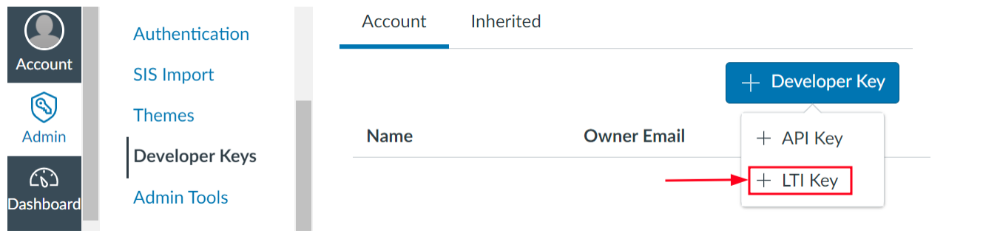
Complete the Key Name, Title and Description fields.
From Codio, under LTI 1.3 Integration, copy the LTI URL and paste it into the Target Link URI field in Canvas.
From Codio copy the Initiate Login URL and paste it into the OpenID Connect Initiation URL.
Copy the Redirect URL and paste it into the Canvas Redirect URI field.
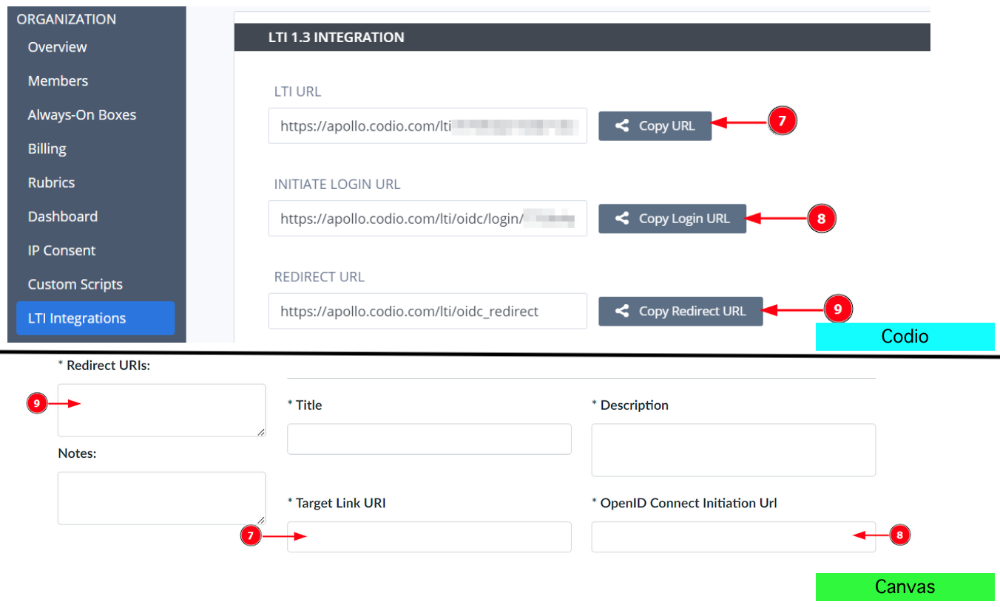
In Canvas, change JWK Method to Public JWK URL.
From Codio, copy the Keyset URL and paste it into the Public JWK URL field.
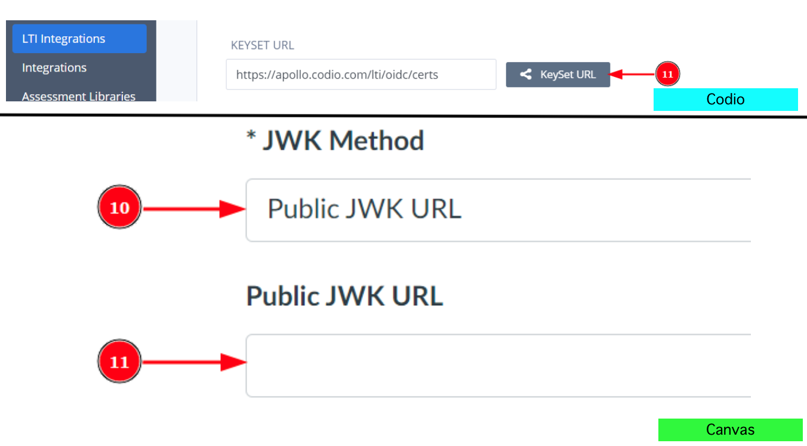
Expand the LTI Advantage Services section and toggle each field on.
Expand the Additional Settings section
Type
codio.comin both the Domain and Tool Id fields.Select the Privacy level as Public.
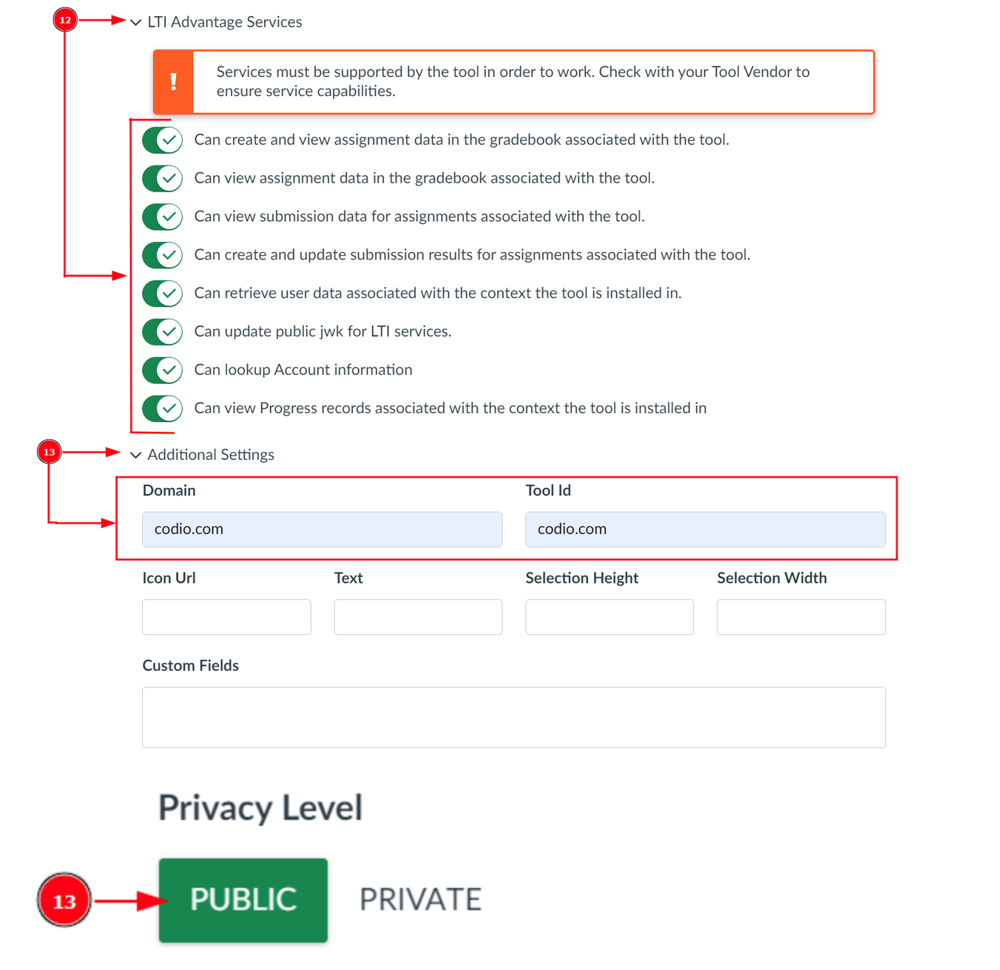
14. Scroll down to the Placements field. You can add a placement by starting to type the name and then selecting it when it appears. Placements that should be included (remove any others): Link Selection, Editor Button, Assignment Selection and Course Navigation.
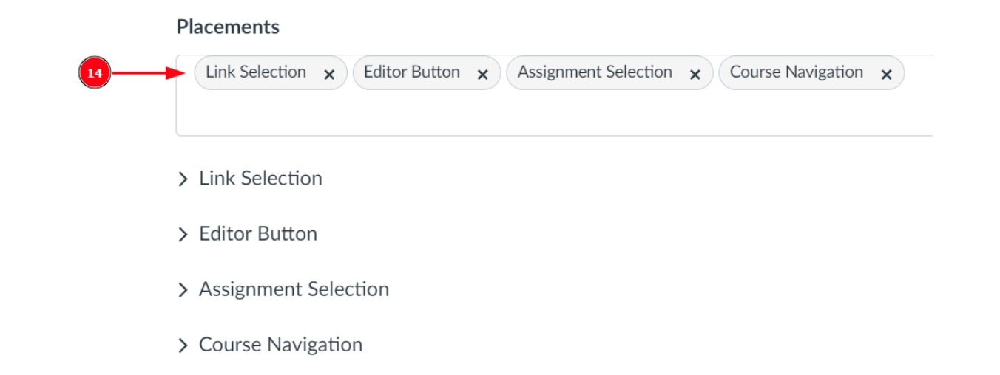
Expand each of the following fields, and copy the static links below:
- Link Selection
Select LtiDeepLinkingRequest
Target Link URI:
https://apollo.codio.com/lti/resource_selectionIcon Url:
https://static-assets.codio.com/dashboard/images/icons/favicon-16x16.da14ae918fd9bc3b.png
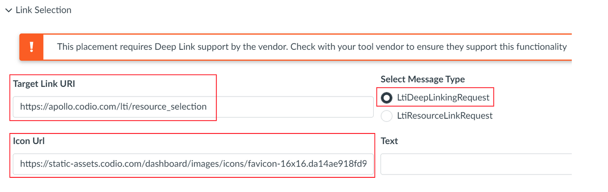
- Editor button
Target Link URI:
https://apollo.codio.com/lti/editor_buttonIcon Url:
https://static-assets.codio.com/dashboard/images/icons/favicon-16x16.da14ae918fd9bc3b.png
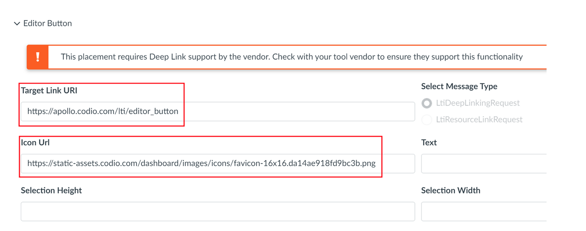
- Assignment Selection
Select LtiDeepLinkingRequest
Target Link URI:
https://apollo.codio.com/lti/resource_selectionIcon Url:
https://static-assets.codio.com/dashboard/images/icons/favicon-16x16.da14ae918fd9bc3b.png
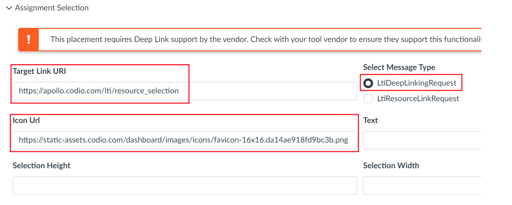
- Course Navigation
Target Link URI:
https://apollo.codio.com/lti/course_navigationIcon Url:
https://static-assets.codio.com/dashboard/images/icons/favicon-16x16.da14ae918fd9bc3b.png
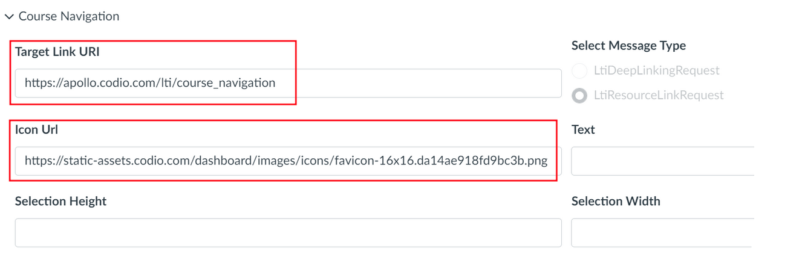
Press Save in bottom right corner
You will be back at the list of developer keys.
Update State to: on
Copy the number in the Details column (for use in Parts 2 and 3)
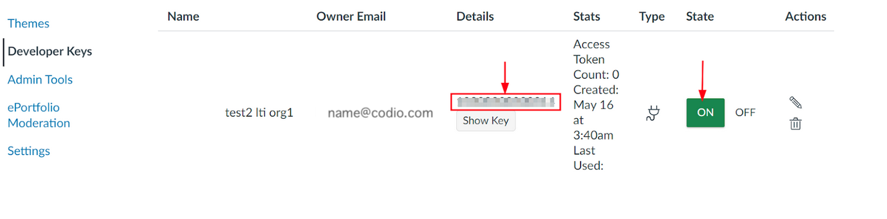
Part 2: Create an application in your course in Canvas¶
In Canvas:¶
- Select an existing course or create a new course.
Optional: create a test course called Codio Test Course before you do it with a production course.
In your course, go to Settings → Apps → + App
In Configuration Type, select: By Client ID
Paste number you copied in Part 1 into Client ID field
Submit → Install
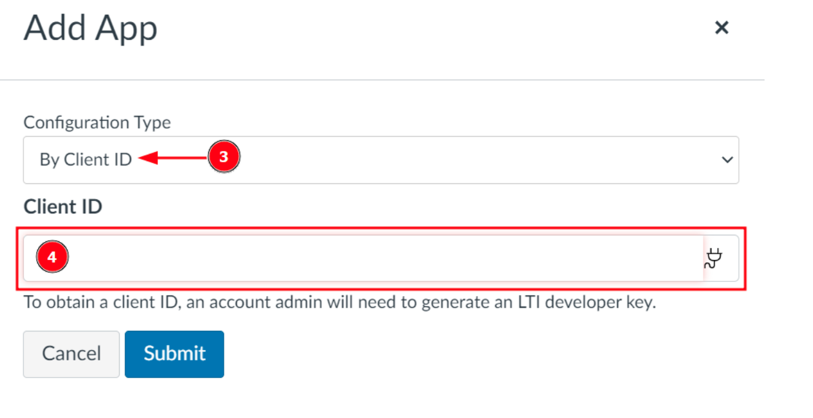
After you click install, click the gear icon by the tool you just created
Select Deployment ID
Copy the ID displayed, it will be used in Part 3
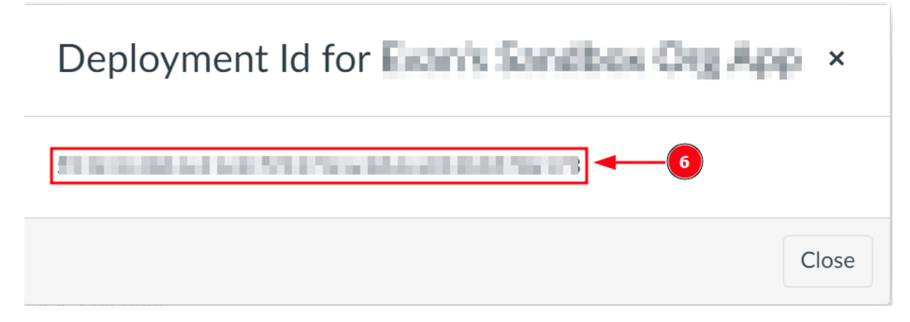
Part 3: Create an LTI configuration in Codio¶
In Codio:¶
In your org → LTI Integrations
Scroll down to LTI 1.3 Configurations
Click Add Integration

- Updating the fields in Platform Information
Note
replace [CANVAS DOMAIN] with your institution’s domain in steps 5-7
Platform ID:
https://canvas.instructure.comClient ID: copied from Developer Keys at end of Part 1
Deployment Id: copied in Part 2
Public Keyset URL:
https://[CANVAS DOMAIN]/api/lti/security/jwksAccess Token URL:
https://[CANVAS DOMAIN]/login/oauth2/tokenAuthentication Request URL:
https://[CANVAS DOMAIN]/api/lti/authorize_redirectClick Create
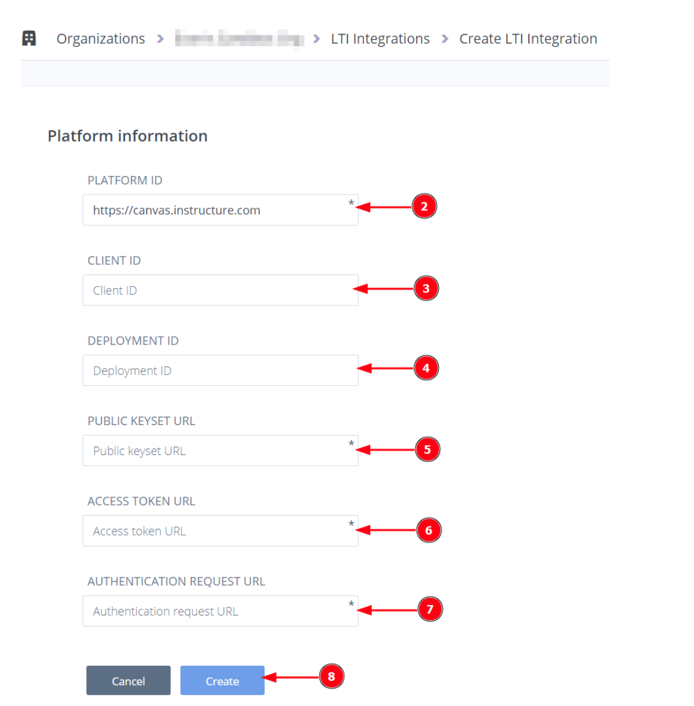
Part 4: Adding a resource¶
In Canvas:¶
Go to Assignments in your course, select +Assignment.
Give your assignment a name.
Select a number of points.
Under Submission Type, select External Tool.
Select Find.
Note
Do not use LTI Integration URL to assign an assignment
6. Select the tool created in Part 1. - Choose the Course and Assignment to connect to - Recommended: Select Load in a new tab
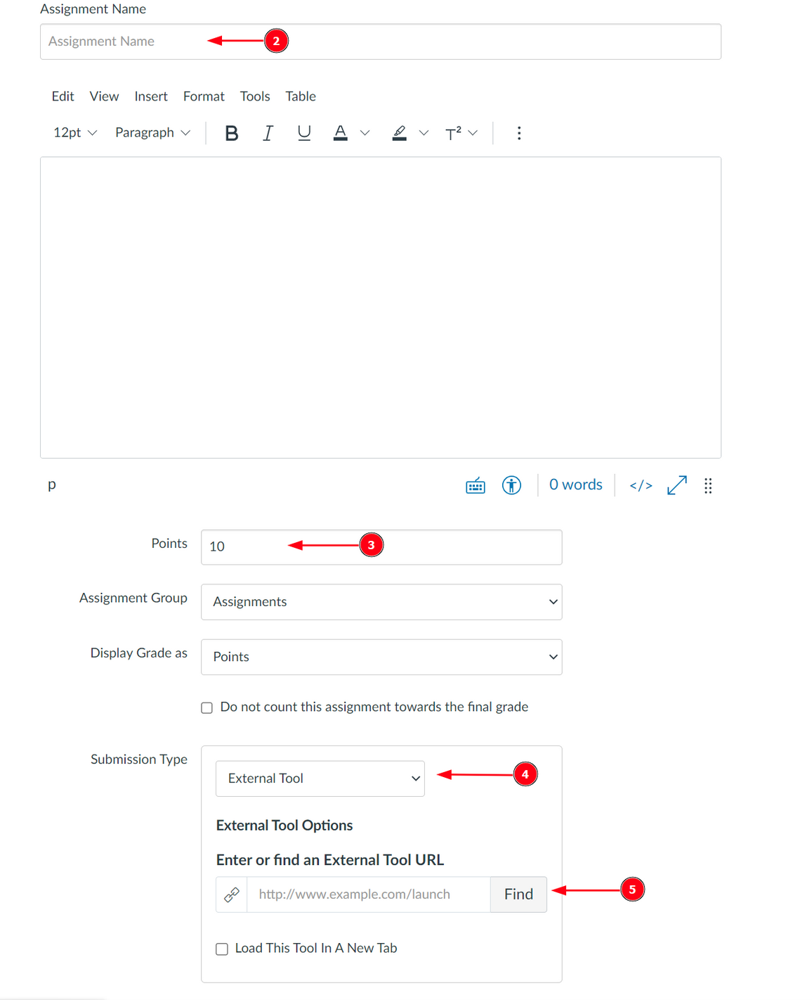
Select Save at bottom of the page
Note: these settings are not final and can be edited in Canvas at a later time.
Part 5: Customizing Iframe Width/Height¶
You can customize the width and height of the Codio window embedded in the Canvas. The default width is 1000 pixels and height is 800 pixels, change those values if you need and press Save Changes.
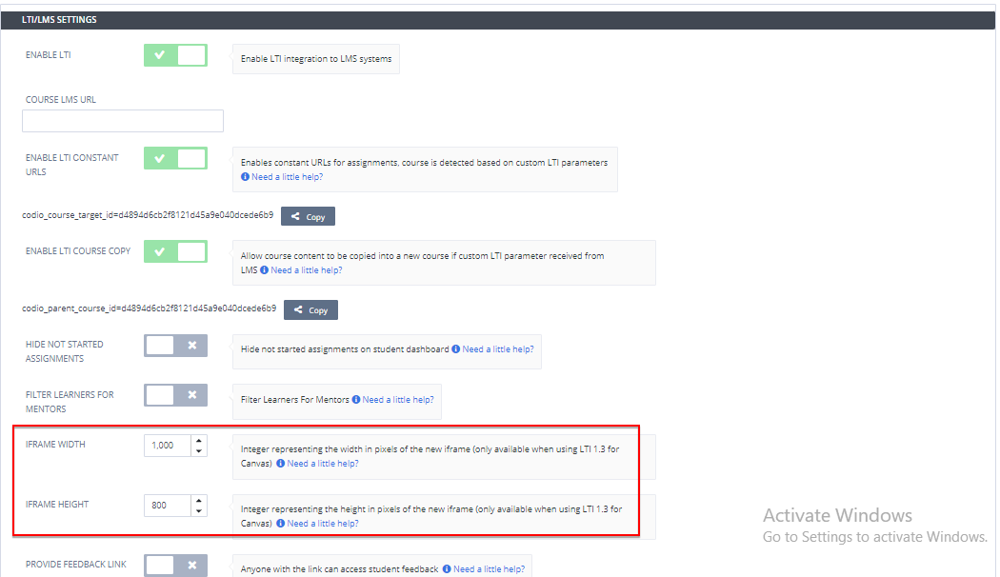
Important Notes on Course Copy in Canvas:¶
- In Canvas, once you copy the course, you must enter a unique SIS ID in Course Settings.
An SIS ID that is different from the Blueprint Course (Canvas’ Parent Course) is required for Codio to spawn a corresponding child course.
An SIS ID is optional for the Blueprint Course.